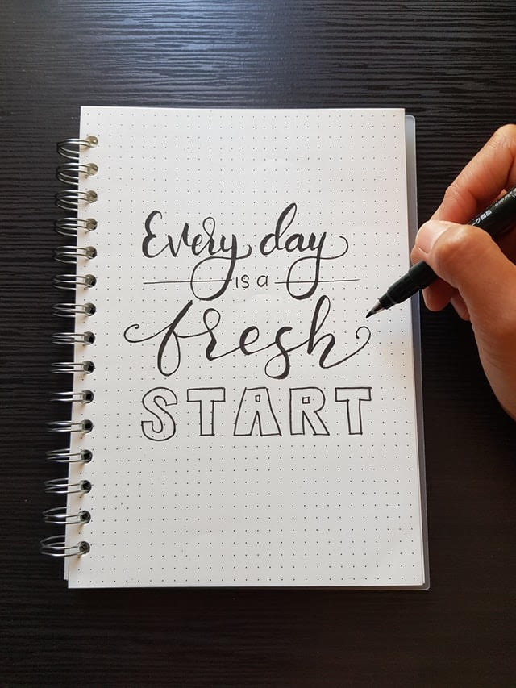

Like many of you, I also missed RRR 😎
but I did watch these 3 movies, 'Kaun Pravin
Tambe?'🏏,Sharmaji
Namkeen🍲 and A
Dog's Way Home🐕
and all of them had 1 thing in common-
PASSION & CONSISTENCY
And, we’ve all heard, multiple times, what it leads to. 🤑
But who defines success for you? People, Numbers, Things 🤔
One thing that defines success is modesty and kindness and working for your beliefs.
Everything has a definition, however, you & I cannot be defined because we are not things, we are people.
And as much as we don’t like to be judged, we should make sure, we don’t judge & we forgive and give
ourselves & others another chance. 😅
God gives us a new chance every day- the moment we wake up each morning, we get our chance to make
better choices, so who are we to not
give a chance. 🙌
